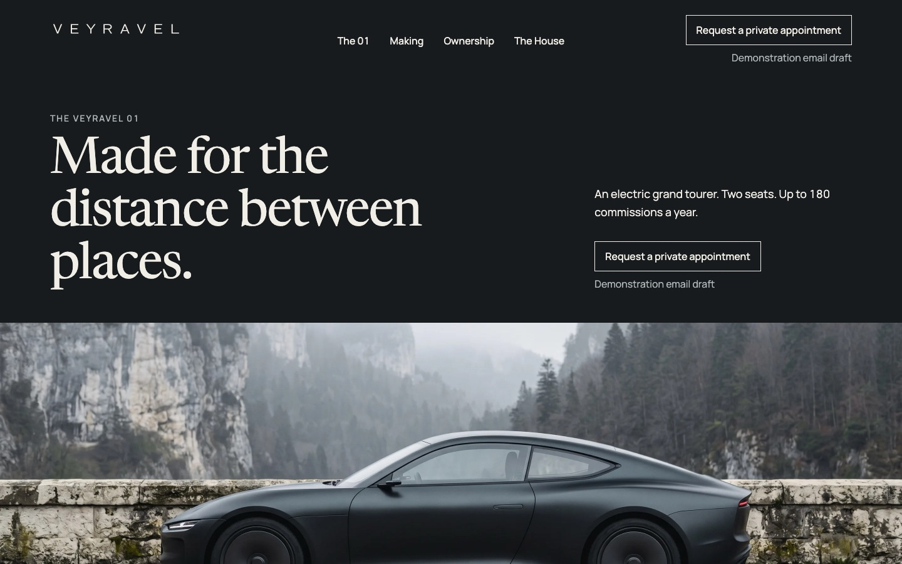
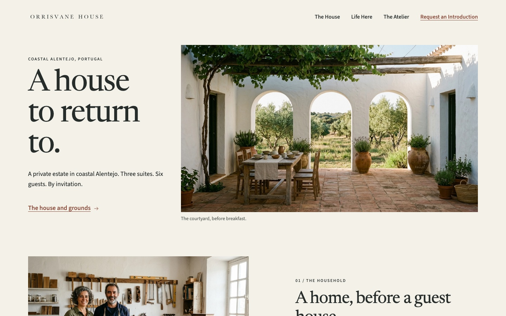
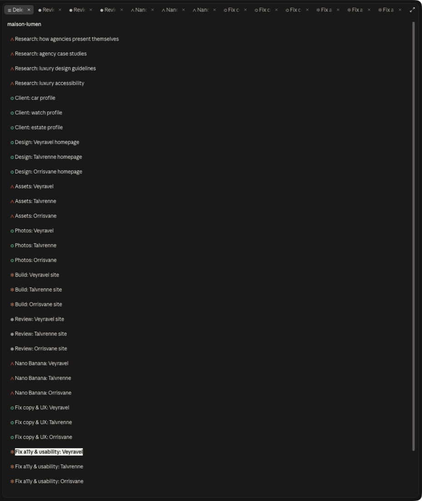

delegate · demo and benchmark
Maison Lumen: one brief, four other agents
Claude Code wrote the brief for an invented luxury agency with three invented clients, then handed every piece of work to another coding agent through the delegate skill. It read each reply, applied each change, and finished each phase before starting the next. Thirty-one runs on four harnesses produced the research, the clients, their designs, identity, photography, three websites, an independent review, and the fixes.

The three websites

VeyravelAn electric grand tourer, built in small numbers Maison TalvrenneIndependent, hand-finished watchmaking
Maison TalvrenneIndependent, hand-finished watchmaking

Orrisvane HouseA private estate, by invitationThe phases
| Phase | Agents | Agent time | Fresh input | Output | What it made |
|---|---|---|---|---|---|
| 1. Research | Antigravity ×4 (Gemini 4 Argon) | 31 min | 312k | 71k | agencies, case studies, design guidelines, accessibility |
| 2. Client profiles | Codex ×3, live web search | 16 min | 357k | 20k | the house, its niche, real competitors, voice and look: Veyravel, Talvrenne, Orrisvane |
| 3. Homepage designs | Codex ×3, image generation | 26 min | 296k | 49k | the homepage as one image, and its build spec: image · spec, image · spec, image · spec |
| 4. Identity and assets | Antigravity ×6, Codex ×3 | 125 min | 899k | 180k | hand-drawn SVG identity, and photographs from Nano Banana 2.1: Veyravel, Talvrenne, Orrisvane |
| 5. Websites | Claude Opus 5.5 ×3 (medium) | 16 min | 331k | 100k | static HTML and CSS; Google Fonts the only outside request |
| 6. Reviews | Grok 4.7 in Cursor ×3, read-only | 42 min | 399k | 239k | 47 findings, each tagged a11y, usability, copy or UX: Veyravel, Talvrenne, Orrisvane |
| 7. Fixes | Codex ×3 (copy, UX), then Claude Opus 5.5 ×3 (a11y, usability) | 18 min | 458k | 63k | the sites as they are now |


Agent time adds up each phase's runs; the three runs of a phase ran at once. Fresh input leaves out cached input (31M tokens in all). Only Claude reports a price; the other agents bill a subscription. The lead's own tokens are not counted.
| Agent | Runs | Agent time | Fresh input | Cached | Output | Reasoning | Cost |
|---|---|---|---|---|---|---|---|
| Antigravity | 10 | 136 min | 1,034k | 8.5M | 228k | 55k | |
| Codex | 12 | 74 min | 1,045k | 11.3M | 116k | 28k | |
| Claude Opus 5.5 | 6 | 23 min | 574k | 10.6M | 138k | $9.48 | |
| Grok 4.7 in Cursor | 3 | 42 min | 399k | 1.0M | 239k |
How the agents worked with Claude Code
- One command per run. The lead wrote each brief to a file and ran
delegate.py start <agent> --file brief.md --project maison-lumen --title "…"in the background, three at a time, and kept working. Each agent ran headless in its own session; its stream (messages, thinking, tool calls) was logged under the agent's mark. - Replies end in a status. Every reply ends with
STATUS: done | question | blocked, so the lead knows whether to apply, answer or unblock. - Writes go to a worktree. Runs that make files work in their own git worktree. The lead read the diff, applied it, checked the result (the sites in a browser: 320 px reflow, alt text, every local link), and committed the phase.
- The panes. In Claude Code the skill shows the Delegations list, pinned, with a spinner beside a working agent and a dot on an unread reply. Each chat opens in a tab with its agent's mark: the whole conversation, a model and effort picker, and a box to write to the agent. When the person writes there, the lead hears both sides once the agent replies.

What went wrong, and what changed because of it
- Antigravity's read-only runs failed headless: plan mode asks permission to read a file, and nobody can answer. Read-only runs now approve its tools and keep plan mode.
- Nano Banana ran out inside Antigravity (a 429 on its own quota) part-way through the assets. Codex generated the twenty missing photographs instead; they read as renders, so the Gemini API CLI became the skill's sixth agent, and Antigravity re-made all twenty with
gemini-api imageon Nano Banana 2.1. - A Codex run finished its work, then lost its connection and exited with an error. A reply that already ends in its STATUS line now stands, and the failure after it is logged.
- An Antigravity run hit the 30-minute turn limit while checking its last drawing, with every file already written.
- The pane broke twice: on events that shared a timestamp, and on drawings past the engine's 100,000 characters. Rows are keyed by position now, long thinking and output start folded, and a conversation draws at most 60,000 characters.
- What the reviewers caught, and missed. Grok found Orrisvane's three dead links, and that its logo was an image tinted by CSS filters, which vanishes in high-contrast mode. It did not see that the filter also turned the logo grey on paper, which the lead saw in the browser. Its fix, the logo inlined as SVG in the text colour, cured both.